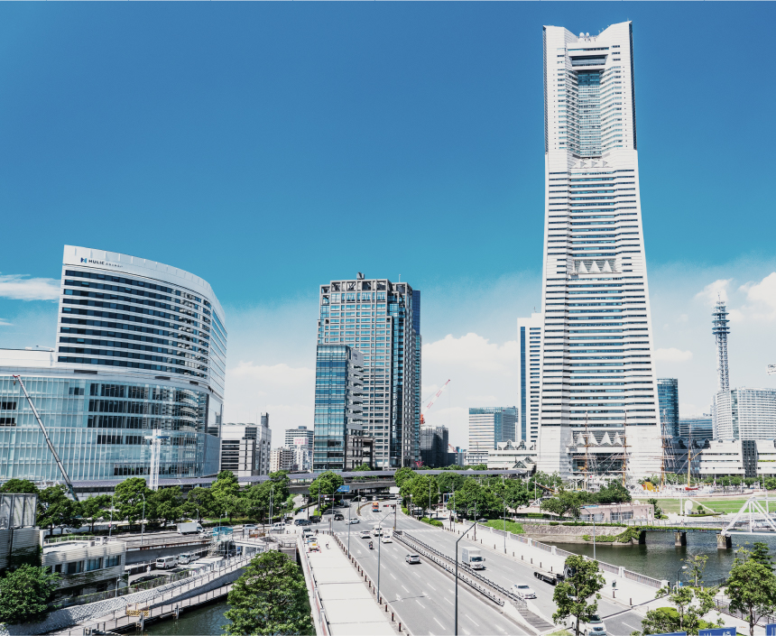

image photo
都心の主要エリアを掌中にする
快適なるアクセス拠点。
地下鉄名城線「東別院」駅をはじめ、徒歩圏で5駅6路線※1が利用可能。栄、伏見といったオフィス街や「名古屋」駅へのスムーズなアクセスを実現します。市内屈指のターミナル「金山」駅からは、名鉄名古屋本線で中部国際空港セントレアへ、JR東海道本線で三河方面へのアクセスも軽快。行動範囲がより快適に広がります。

路線図
-
地下鉄名城線「東別院」駅まで 徒歩8分
地下鉄名城線
「東別院」駅まで徒歩8分
地下鉄鶴舞線
「大須観音」駅まで徒歩12分


image photo
「栄」駅直通6分（6分）
「東別院」駅より地下鉄名城線利用
「栄」駅
直通6分（6分）
「東別院」駅より地下鉄名城線利用
-
地下鉄鶴舞線「大須観音」駅まで 徒歩12分


image photo
「名古屋」駅7分（11分）
「大須観音」駅より地下鉄鶴舞線利用、「伏見」駅で地下鉄東山線に乗換え
「名古屋」駅
7分（11分）
「大須観音」駅より地下鉄鶴舞線利用、「伏見」駅で地下鉄東山線に乗換え
-


image photo
「伏見」駅
直通1分（1分）
「大須観音」駅より地下鉄鶴舞線利用
-


image photo
「久屋大通」駅
直通8分（8分）
「東別院」駅より地下鉄名城線利用
-


image photo
「名古屋城」駅
直通10分（10分）
「東別院」駅より地下鉄名城線利用
世界への玄関口「中部国際空港」へ、ダイレクトなアクセスが可能
徒歩15分の「金山」駅より、名鉄名古屋本線が利用可能。当駅から「中部国際空港」駅へ直通電車が利用でき、国内各地や海外への出張・旅行の際にも便利です。
-
名鉄名古屋本線 「金山」駅よりミュースカイ利用
「中部国際空港」駅へ直通24分（24分）
-

image photo
名鉄名古屋本線 「金山」駅より
ミュースカイ利用「中部国際空港」駅へ直通24分（24分）
※1：※1：5駅6路線とは、地下鉄名城線「東別院」駅（徒歩8分）、地下鉄鶴舞線「大須観音」駅（徒歩12分）、地下鉄名城線・鶴舞線「上前津」駅（徒歩13分）、名鉄名古屋本線「山王」駅（徒歩14分）、地下鉄名城線・名港線「金山」駅（徒歩14分）、JR東海道本線・中央線、名鉄名古屋本線「金山」駅（徒歩15分）のことです。
※掲載の所要時間は待ち時間・乗り換え時間を含んだ通勤時（カッコ内は日中平常時）の目安であり、時間帯により多少異なります。
※掲載の路線図は、一部路線・駅等を抜粋して表記しています。


都心立地だからこそ、日常的に気軽にタクシー利用
深夜の帰宅時、出張や旅行・ショッピングなど荷物の多い際、雨の日のお出かけなどに、タクシーを気軽に利用してスマートに移動できます。
■「シティタワー東別院」までのタクシー料金シミュレーション（概算）
-

image photo
金山駅（金山駅南口）より

-

image photo
栄駅（栄駅7番出口）より

-

image photo
名古屋駅（桜通口）より

※タクシー料金は、初乗り500円の普通車（中型車）を日中時（深夜時は22時～5時）に一般道で利用した場合の参考例です。タクシー会社・走行ルートおよび交通状況によって料金は異なります。
※タクシーサイトより（2023年9月調べ）


名古屋高速都心環状線の入口が近く、お出かけも軽快に。
名古屋の中心部を縦断する伏見通、山王通、大津通など、快適な交通網が広がる現地周辺。高速道路の入口にも近いため、空港やレジャースポットへ、自在なカーアクセスが可能です。
■名古屋高速都心環状線「東別院」入口（山王JCT方面）まで約770m
-

レゴランドimage photo
伊勢湾岸自動車道
「名港中央」出口約17分（約17.2km）
-
ナガシマスパーランドimage photo
伊勢湾岸自動車道
「湾岸長島」出口約24分（約28.3km）
-

中部国際空港image photo
中部国際空港連絡道路
「セントレア東」出口約39分（約43.8km）
※掲載の距離表示については地図上の概測距離を、高速道路は「ドラぷら（NEXCO東日本）」ホームページにて検索（2023年9月現在）したものです。
※距離表示については地図上の概測距離を、徒歩分数表示については80ｍを1分として算出し、端数を切り上げたものです。
※掲載の情報は2023年9月現在のものです。